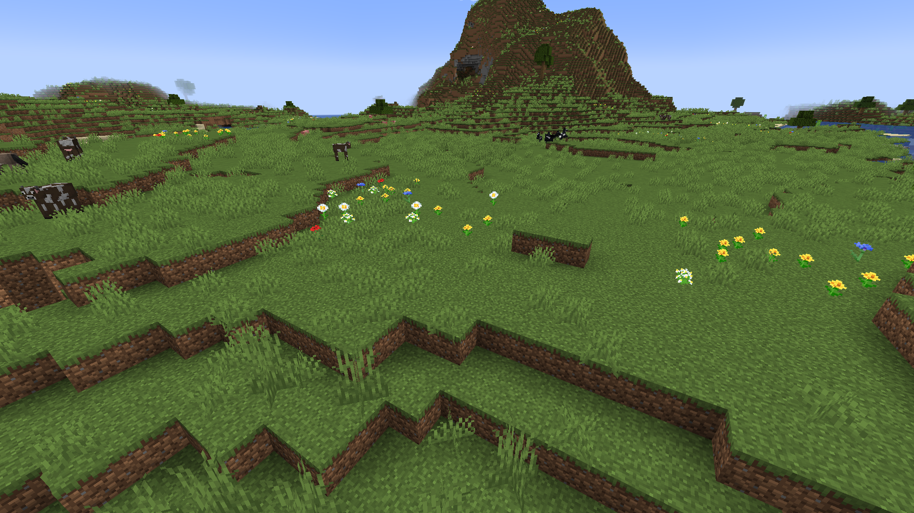
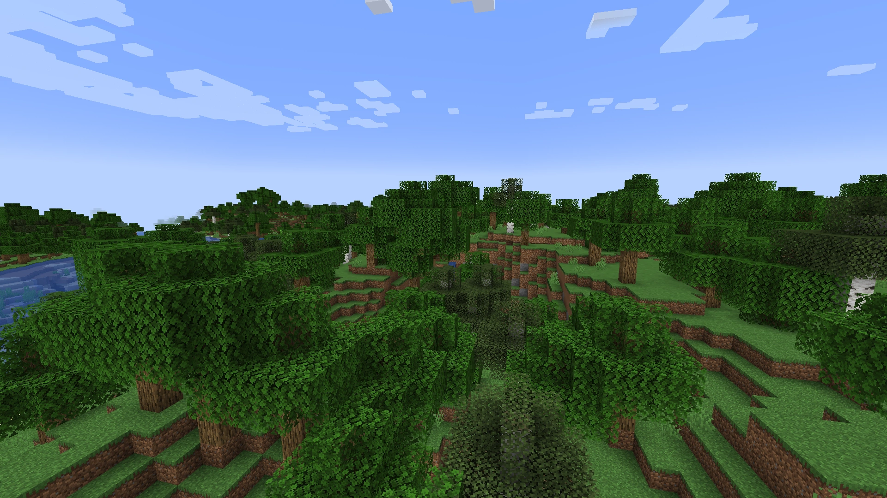
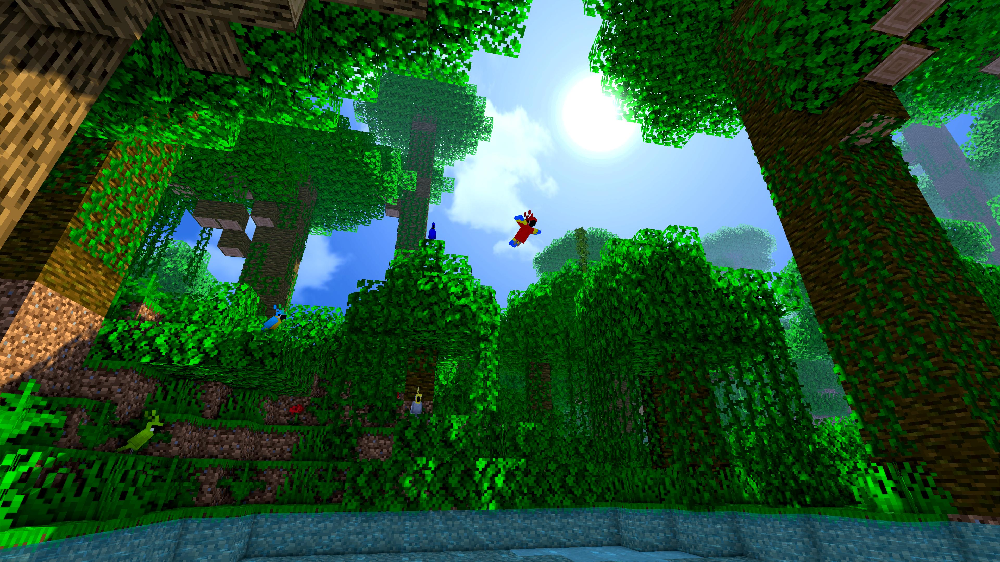
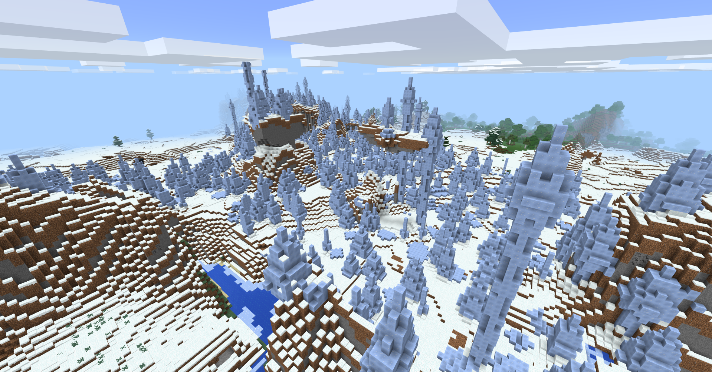
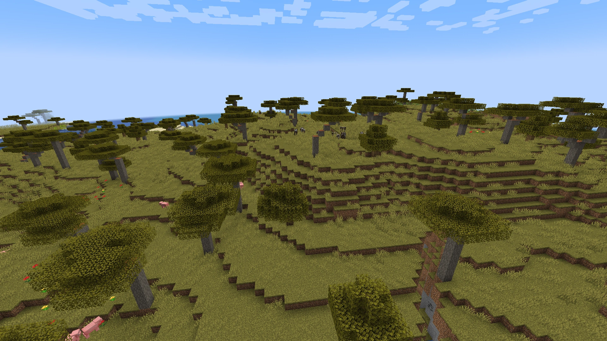
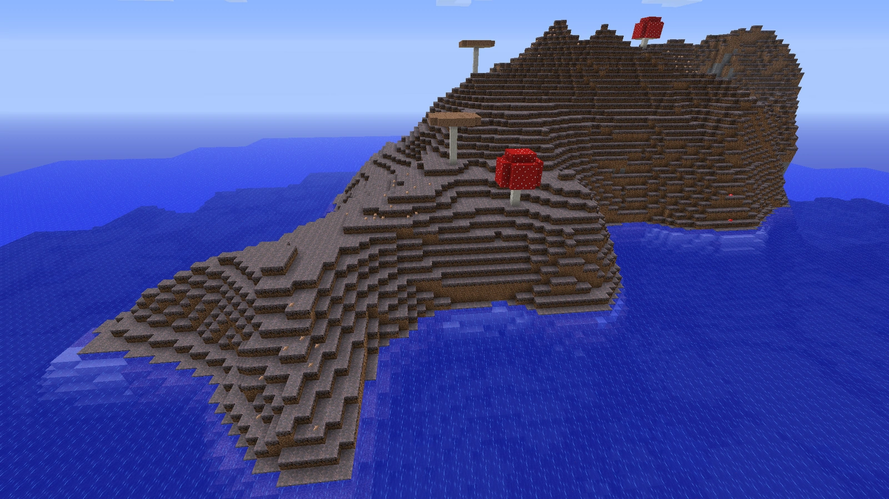

Egy biom a Minecraftban egy olyan régió a világban, amelynek földrajzi
adottságai, növényvilága , hőmérséklete, páratartalma, valamint az
égbolt, a víz, a fű és a lombozat színe eltérő. Ezekből nagyon sok féle
létezik pontosabban 79, ezért ebben a kis ismertetőben csak a főbb
fajtákról fogunk írni.
| Síkság | Erdők | Dzsungelek | Hegyek |
| Sivatagok | Tajga | Jégtüskék | Mocsarak |
| Szavannák | Gomba szigetek | Alvilág | Vég |
Síkság

A síkság gyakori élőhely, általában fák nélkül. Sok passzív mob születik
itt, például sertések, tehenek, juhok és lovak. Általában erdőkkel
határosak. A napraforgósíkság az egyetlen élőhely, ahol napraforgó
található.
Erdők

Az erdők remek kiindulópontok, mert némelyikükben sok fa van a
fakitermeléshez. Az erdő egyéb változatai közé tartozik a virágerdő,
amely szinte mindenféle virágot termeszt a Minecraftban. A nyír- és
sötéttölgyesek normál erdők, a fák színe világos vagy sötét lehet. A
sötét tölgyerdők az egyetlen olyan életközösség, amelyben erdei kúriákat
lehet találni.
Dzsungelek

A Minecraftban a dzsungelek egy átláthatatlanul sűrű erdők melyekben
akár dzsungeltemplomokat is találhatunk.Léteznek azonban
bambuszdzsungelek, amelyeket gyakran találhatunk nagyobb dzsungelek
belsejében. Pandákat csak a bambuszdzsungelben találhatunk.
Hegyek

Tudod, hogy egy hegyi biomban vagy, amikor sok követ és lebegő
szigeteketlátsz. A hegyi biomok az egyetlen olyan helyek, ahol smaragd
található, amely kiválóan alkalmasak a falusiakkal való kereskedésre. A
fák általában nem nőnek a kavicsos hegyekben.
Sivatagok

A sivatagi biomok nagyon csupaszok. Homokot, homokkövet, elhalt
bokrokat, barna nyulakat és kaktuszt tartalmaznak. Ezekben az
életközösségekben olykor sivatagi falvakat, fosztogatói előőrsöket,
templomokat és tavakkal rendelkező kutakat találhatunk.
Tajga

A tajga biomok egyesítik a dzsungel és az erdei biomokat. Jellemzően
lucfák és páfrányok nőnek itt. A tajgák tartalmazhatnak farkasokat,
rókákat, édes bogyós bokrokat és falvakat. A tajgákban néhol hatalmasra
nőtt fákkal is lehet találkozni.
Jégtüskék

A ritka jégtüskék biomok nagy struktúrákat és jégcsomókat jelenít meg,
amelyek szinte fákként vannak szétszórva. Erőforrásokat itt még nehezebb
találni, mint bárhol máshol.
Mocsarak

A mocsári biomok általában az egyik legveszélyesebbek a túlélés
szempontjából. Ezekben a biomokban boszorkánykunyhók keletkeznek, és a
nyálkák is tömegesen vannak itt.
Szavannák

A normál szavanna biomokban akácfák, valamint ló- és lámacsordák
találhatók. A falvak és a fosztogató előőrsök is generálhatnak ezekben a
biomokban. Az töredezett szavannák meredek hegyekkel, mély tavakkal,
láva- vagy vízesésekkel és véletlenszerű kráterekkel rendelkeznek.
Gomba szigetek

Ezek a biomok nagyon ritkák, és általában az óceán közepén keletkeznek,
távol minden mástól. Ezek nagy szigetek, amelyek micéliumból állnak, ami
felgyorsítja és ösztönzi a gombák növekedését. Csak itt születhetnek
gombatehenek és a szigeten egy ellenséges mob sem keletkezhet.
Alvilág

Az alvilág elkülönülve létezik a mi általunk ismert felti világtól. Ez a
biom csupa láva és forróság. Itt találhatunk alviági erődöket,
zombimalacembereket, piglineket, hoglinokat,szellemeket és még sok más
erős lényt. Az alviágba egy portál segítségével lehet átmenni amihez 8
obszidiánra lesz szükséged.
Vég

A vég elkülönül az felvilágtől és alvilágtól, és garantáltan
generálódik. Itt egy óriási központi szigetet több kisebb terület és
sziget vesz körül. A központi szigeten keletkezik a játék végső
ellensége a végsárkány. A sárkány legyőzése után itt akár úgymond vég
"városokat" is találhatsz. A végben még nagy mennnyiségű endermant
találhatsz.